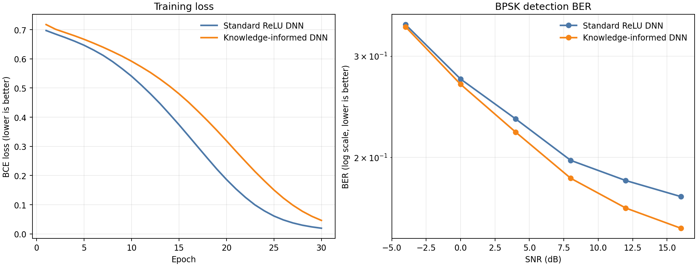

Knowledge-informed neuron：无线多径 BPSK 检测对比
同一套 256–128–64–4–1 全连接网络，在相同数据、随机种子和优化器下，对比普通 ReLU 与带有匹配滤波知识的类神经元。结果由本次自动运行生成。
结果
BER 越低越好；accuracy 是中心 BPSK 符号的判决准确率。测试集的真实信道相对名义信道有 10% 随机扰动，因此先验不是完美答案。

| SNR (dB) | Standard ReLU DNN | Knowledge-informed DNN | ||
|---|---|---|---|---|
| BER | Accuracy | BER | Accuracy | |
| -4 | 0.3403 | 65.97% | 0.3373 | 66.27% |
| 0 | 0.2737 | 72.63% | 0.2680 | 73.20% |
| 4 | 0.2333 | 76.67% | 0.2213 | 77.87% |
| 8 | 0.1977 | 80.23% | 0.1840 | 81.60% |
| 12 | 0.1823 | 81.77% | 0.1633 | 83.67% |
| 16 | 0.1710 | 82.90% | 0.1507 | 84.93% |
完整数值：metrics_by_snr.csv；训练曲线：training_history.csv。
实验到底改变了什么
每个样本是长度为 128 的复数接收序列 y，输入网络前拆成 128 个 I 分量和 128 个 Q 分量，所以输入维度是 256。序列由 BPSK 符号经过 5-tap 复数多径信道并加入 AWGN 得到；网络要判断中心位置的符号。
普通模型的隐藏层使用 ReLU(z)=max(0,z)。知识模型使用固定的、无额外可训练参数的：
KReLU(z,q) = ReLU(z + 0.35*tanh(q)) + 0.08*tanh(q)
其中 q 是用名义信道冲激响应做的可微匹配滤波分数。它把无线通信中“已知信道结构可以先做匹配/合并”的知识注入每个隐藏神经元；权重层、宽度、损失函数和训练数据都保持不变。
如何运行
直接用 Python 3.12
python -m pip install -r requirements.txt python train_experiment.py --device auto --epochs 30
若已安装 CUDA 版 PyTorch，--device auto 会自动使用 GPU；也可以显式写 --device cuda：
python -c "import torch; print(torch.__version__, torch.cuda.is_available())"
快速试跑：python train_experiment.py --quick。所有输出写入 results/，不会删除原有文件。
Docker（CPU，可复现）
docker build -t knowledge-neuron-wireless .
docker run --rm -v "${PWD}/results:/work/results" knowledge-neuron-wireless
这个 Dockerfile 使用 Python 3.12 和 CPU 版 PyTorch。GPU Docker 需要宿主机安装 NVIDIA Container Toolkit，并在镜像中改用与你驱动匹配的 CUDA 版 PyTorch；直接在已有 CUDA Python 环境运行通常更省事。
可复现参数
{
"architecture": [
256,
128,
64,
4,
1
],
"nominal_channel_IQ": [
[
0.30867859721183777,
0.10289286822080612
],
[
0.7819857597351074,
-0.24694286286830902
],
[
1.810914397239685,
0.0
],
[
0.864300012588501,
0.22636429965496063
],
[
0.3704143166542053,
-0.08231429010629654
]
],
"target_index": 64,
"training_snr_db": "Uniform(0, 12)",
"test_snr_db": [
-4.0,
0.0,
4.0,
8.0,
12.0,
16.0
],
"channel_jitter": 0.1,
"knowledge_neuron": "ReLU(z) + 0.25*tanh(q)"
}
本项目不会运行 MATLAB；如果之后希望在有 license 的远程机器上做 MATLAB 复现，可以按同一组数据公式和 metrics_by_snr.csv 对照。Python 版本是完整自动实验入口。
参考
- O'Shea & Hoydis, An Introduction to Deep Learning for the Physical Layer：将深度学习用于物理层和 expert/domain knowledge 的背景。
- PyTorch ReLU documentation：普通 ReLU 定义。
- PyTorch CUDA availability documentation：本脚本自动选择 GPU 的依据。
生成时间：2026-09-13 16:18:38；耗时：7.2 秒。